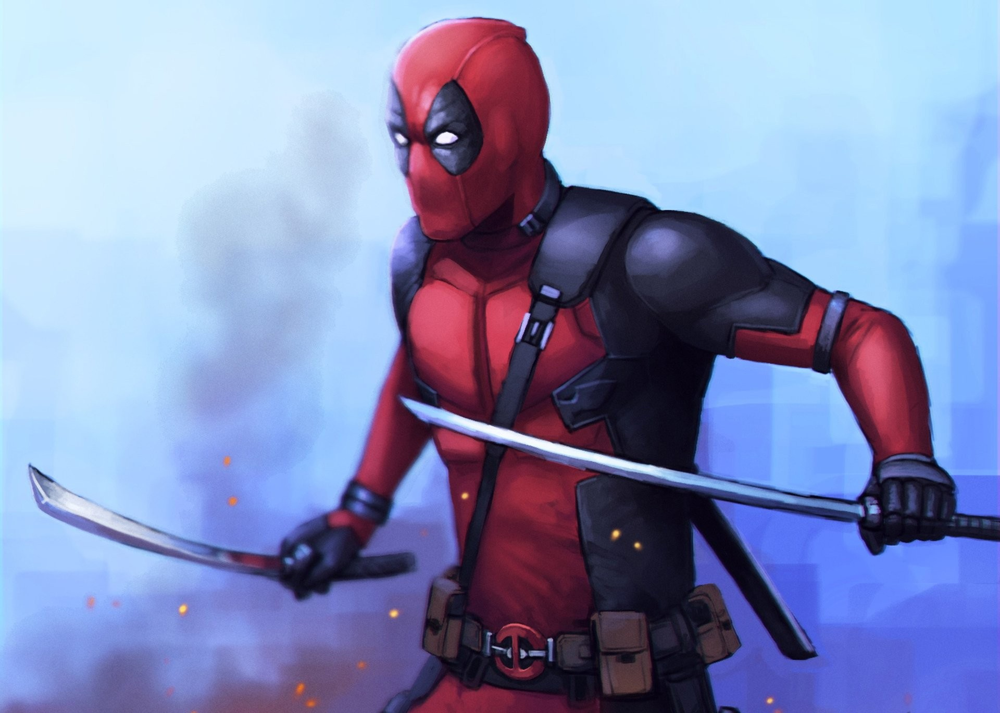

Call us on
Call us on  English
English Russian
Russian Kazakh
Kazakh Ukraine
UkraineLove polls? Do you want to see epic battles of various characters from various universes of pop culture? Then join our public INFINITY FIGHTS and vote for the strongest hero! Also in the discussions you can offer your options for battles. We welcome all newcomers and appreciate the old, but nevertheless we appreciate mutual respect and adequate behavior. Peace to all, meet in the heat of battle!
Deadpool
"I'm a bastard who makes a living by killing even bigger bastards."
Biography:
Skills and powers.
- - Pierced and pulled out an armored windshield with one strike;
- - Bent a thick metal crowbar;
- - Easily breaks people's limbs.
- - sent a roundhouse kick moreover, flying several meters and demolished metal barrels for them, he was also able to throw a person out of the car with such force that he knocked out the trunk door of an SUV, kicked out the door of a moving car with a blow of two legs.
- - Jumps to a height of several meters;
- - Deadpool's speed allows him to get out of the line of fire for several UZIs after the shots have been fired;
- - In close combat, Deadpool cut down criminals, thugs and yakuza with katanas faster than they could react;
- - The reaction allows you to cut through several pistol bullets fired a meter in front of him, however, it is worth considering that Deadpool was ready to fire, and 6 of the 16 shots reached Wade's body.
- - Calmly caught a steel axe flying by;
- -instantly throws the knives in vital organs and kill the target;
- - Deadpool's stamina is superhuman. After spending several days in the pressure chamber without food, water and normal air supply, and after withstanding the explosion of oxygen tanks that destroyed a one-story building, he was able to give an equal fight to Ajax, who easily lifted a man with one hand and threw Deadpool ten meters away, although Wade lost in as a result;
- - Agility and coordination allows Deadpool to perform acrobatic stunts and shoot accurately at targets so quickly and easily that ordinary people do not have time to understand what happened;
- - Deadpool is an excellent fighter and shooter - using only twelve bullets (in fact, only 7, he spent part of the bullets empty) he killed a group of bandits from about a dozen people, he performed an incredible trick - in a jump, being upside down, hit three bandits standing in row in the head. Two shots from pistols during a twisted jump, killed two bandits with a shot in the head. Able to shoot a creeping enemy directly in the forehead, without looking. But his main weapon can be called two katanas, with which he killed a group of Ajax mercenaries, whose training and equipment is not much inferior to special forces, single-handedly defeated a group of several yakuza; he also throws his katana excellently - he was able to hit the wheel o f a moving motorcycle and threw the katana so that it would hit exactly with the handle. Wade's style combines sudden and seemingly illogical attacks, accurate shots during acrobatic stunts, which is why experienced criminals or militants cannot keep track of Deadpool's attacks. Accurately throws knives, can even kill a person by throwing a butter knife at him, is able to throw a knife exactly at the head from a couple of meters in a small photograph; or in the eye of an enemy running at him. He was able to break a man's neck by grabbing it with his feet. He fought on equal terms with Cable, although he surpassed Wade in terms of physical characteristics, weapons and technological progress. Cable easily breaks through concrete with his fists and bends thick metal pins. able to throw a knife from a couple of meters exactly at the head in a small photograph; or in the eye of an enemy running at him. He was able to break a man's neck by grabbing it with his feet. He fought on equal terms with Cable, although he surpassed Wade in terms of physical characteristics, weapons and technological progress. Cable easily breaks through concrete with his fists and bends thick metal pins. able to throw a knife from a couple of meters exactly at the head in a small photograph; or in the eye of an enemy running at him. He was able to break a man's neck by grabbing it with his feet. He fought on equal terms with Cable, although he surpassed Wade in terms of physical characteristics, weapons and technological progress. Cable easily breaks through concrete with his fists and bends thick metal pins.
- - Red suit, so that the enemies do not see the blood;
- - Army knife;
- - Throwing knives;
- -Two katanas. Strong enough to block bullets without damage, pierce concrete, also cut/pierce people like butter;
- - 2 Desert Eagle Mark XIX, a shot powerful enough for one bullet to go through 3 human heads;